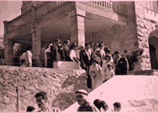
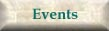

This web site was established on January 1997, and is updated on the 1
st
of each month.
Contact Information
Tel :972-2 298 73 74/5 Fax: 972-2 298 73 74
POBOX: 1887 Ramallah
Palestine
© 1997 Khalil Sakakini Cultural Centre
This site is designed and maintained by
InterTech Co.